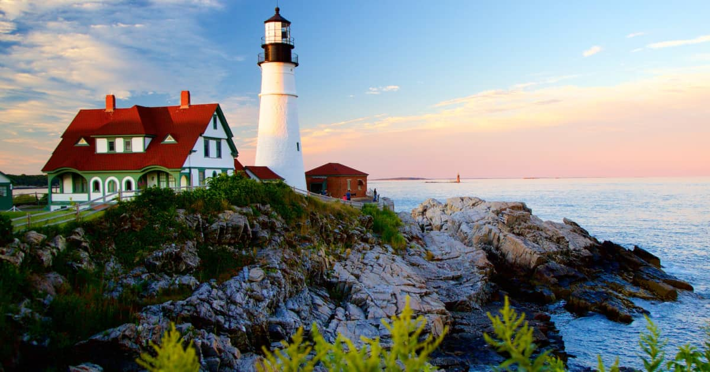
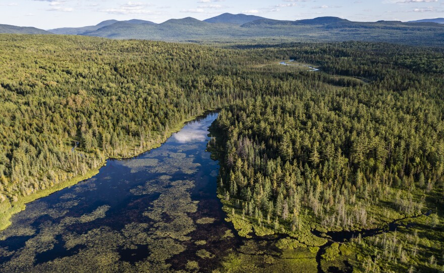
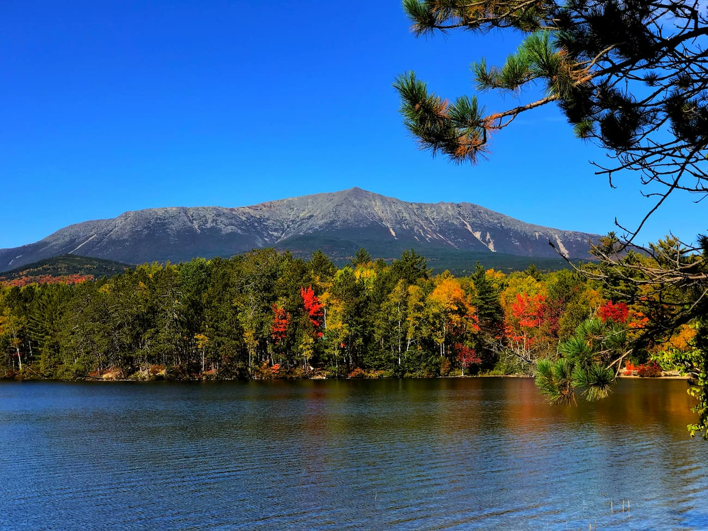
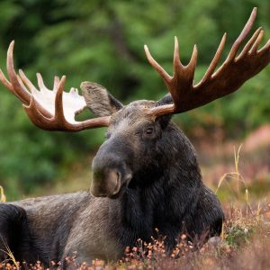

Maine is a state known for its diverse and stunning natural landscapes. From rugged coastlines to dense forests and majestic mountains, Maine offers a plethora of outdoor adventures.
The coastline of Maine is famous for its rocky shores, picturesque lighthouses, and charming fishing villages. Visitors can explore sandy beaches, go whale watching, or enjoy fresh seafood by the ocean.
The dense forests of Maine are home to a variety of wildlife, including moose, black bears, and white-tailed deer. Visitors can hike through lush greenery, camp under the stars, or simply enjoy the tranquility of nature.
Maine's mountains, including the iconic Mount Katahdin, offer spectacular views and thrilling outdoor activities such as hiking, rock climbing, and skiing in the winter months. The Appalachian Trail also passes through Maine, attracting avid hikers from around the world.
From its coastal waters to its forests and mountains, Maine is teeming with wildlife. Birdwatchers can spot bald eagles and puffins along the coast, while nature enthusiasts may encounter moose and other mammals in the wilderness.
Here are the most visited tourist sites in the state of Maine:
| Name of the site: | Number of visitors: |
|---|---|
| Acadia National Park | 4,069,068 |
| Sugarloaf Mountainh | 350,000 |
| Coastal Maine Botanical Garden | 336,000 |